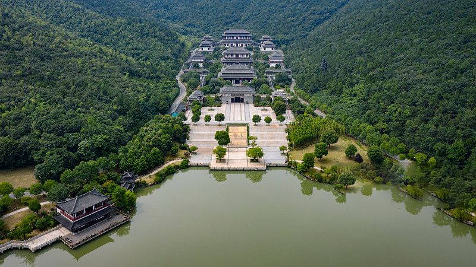
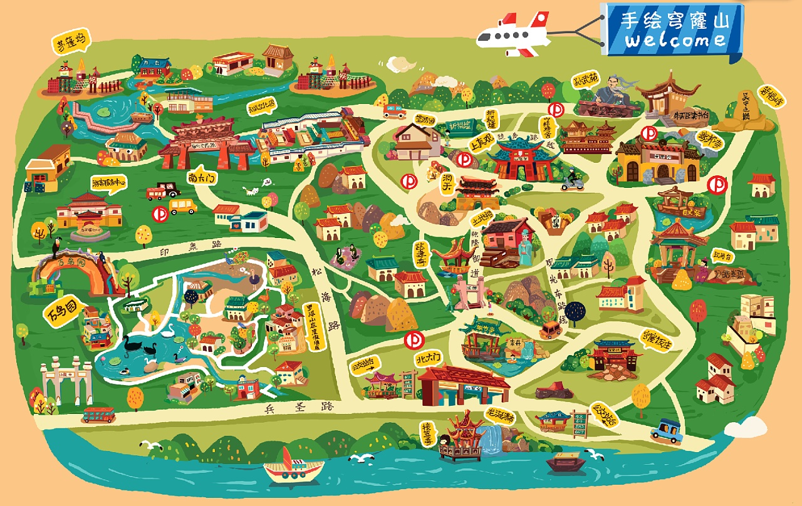

穹窿山简介
苏州穹窿山位于江苏省苏州市西部，跨吴中区光福、木渎和胥口3镇，现为吴中太湖旅游区的重要组成部分。 穹窿山拥有丰富的自然资源，山上森林成片，被称为“城市绿肺”、“天然氧吧”。穹窿山景区历史悠长，集政治、军事、宗教、文化于一山，丰富的人文景观是其又一资源优势， 其著名景点有：孙武苑、朱买臣读书台、望湖园、上真观、宁邦寺、玩月台等。
穹窿山现为国家5A级景区，设有东吴国家森林公园，茅蓬坞为江苏省自然保护区。有朱买臣读书台、上真观上院遗址、孙武苑等古迹、纪念地。
1981年8月，穹窿山茅蓬坞被列为江苏省自然保护区；1993年，建立东吴国家森林公园。 2006年，吴中区将230省道以南、绕城高速以西的藏书镇区域10.5平方公里单独设立为穹窿山风景管理区，现为国家5A级景区。
历史沿革
汉《越绝书》称穷隆山，载：“由钟穷隆山者，古赤松子所取赤石脂也。”《姑苏志》：曰“穹窿山，比阳山尤高。 《五湖赋》云：穹窿纡曲，盖此山实峻而深，形如钗股。……山东岭下有盘石，高广丈许，相传朱买臣读书其上，后人号为读书台，穹窿寺在焉。 其北有紫藤坞、百丈泉、海云菴。西址有白马寺。”
经学术界考证，穹窿山为当年孙武子的隐居地，孙武在此完成了其传世之作——《孙子兵法》。清帝乾隆六次临山，留下无数鲜为人知的轶事；西汉大臣朱买臣，曾在此砍柴、读书。
穹窿山不但气势雄伟，而且风光旖旎，偶尔它雾巅相连，漂缈似烟，若隐若现，犹如一名含羞答答的少女，晴朗天山姿巍然屹立，郁郁葱葱，犹如一群力拔山河气盖世的勇士。
穹窿山有苏州地区四大之誉，一即主峰341.7米，二为苏州地区较大的山，三有幽深的山坞，四为拥有苏州地区为数不多的也是长的盘山公路，约12公里。
地理环境
穹窿山位于江苏省苏州市西部，跨吴中区光福、木渎和胥口3镇。
2013年1月，苏州市吴中太湖旅游区荣膺国家AAAAA级景区。原4A级景区穹窿山成为5A级太湖旅游区的重要景区。
穹窿山景区拥有丰富的自然资源，拾阶而上，步移景易，或苍松翠竹，或泉水潺潺，环境极为清幽静谧。 612亩的省级自然保护区——茅蓬坞是一座天然的植物博物馆，拥有牛鼻栓、短穗竹、紫楠等名贵树种以及穹术、三七、党参、灵芝、何首乌等药用植物，已探明的药用植物就有151种。 穹隆山景区还是苏州地区最大的“天然森林氧吧”，林间氧气充足，空气中负离子含量每立方米达2万个，是一般空间负离子含量的400至500倍。 全长12公里的盘山公路蜿蜒曲折，直达山顶，贯穿各个景点，著名景点有：孙武苑、朱买臣读书台、望湖园、上真观、宁邦寺、玩月台等等。
旅游信息
开放时间:
周一至周日8:30-16:30（全天），停止入场时间：16:00（10月8日-次年4月30日）
周一至周日8:30-17:00（全天），停止入场时间：16:30（5月1日-10月7日）
门票价格
普通票价：80元/人。
地铁及公交
1. 地铁1号线“木渎”站下，1号口出，步行到金山南路上的“中华园大酒店”公交站，坐64路到“穹窿山景区”站下。64路在苏州火车站前，火车站旁边的苏州汽车客运北站前都有坐。
2. 地铁2号线“桐泾公园”站下，4号口出，步行到解放东路的“友新新村”公交站，坐43路到“穹窿山景区”站下。43路在吴中汽车站西边也有坐。
3. 乘667路“穹窿山景区”站下。
4.观光车可以将你送至上真观、望湖园、孙武苑、或宁邦寺站点，坐一次10元，只要下了车再上车就又得付10元。
自驾
1.上海方向：沪宁高速-东桥枢纽-苏绍高速-苏福路-景区入口。
2. 南京方向：宁沪高速-东桥枢纽-苏绍高速-苏福路-景区入口。
3.浙江方向：苏嘉杭高速-尹山枢纽-苏绍高速-苏福路-景区入口。